Git教學第四章:
我們來講解branch
branch是防止conflict的出現，通常我們開發專案，我們的產品一定會有些功能我們可能還沒做完，但顧客不可能使用我們還未完成的功能的版本，而branch可以簡單的解決。
而branch簡單來說就是，想像我們每次的跟改為一個支線，但假設我們要開發一個新功能，但完成到一半，這時我們可以開一個branch，意思是開了另一個支線，但這個支線不影響主要的branch。
第一步:先創建一個branch
我們用兩台電腦實驗
在VScode的方法是在左下角我們點選master，建立分支，然後取名，如果是指令的話則輸入git checkout -b [branch的名稱]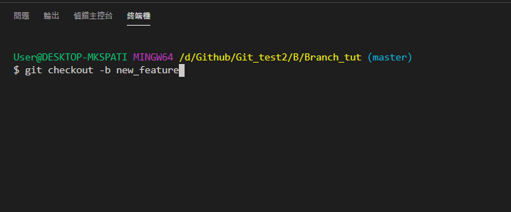
這時可以看到master-->new_feature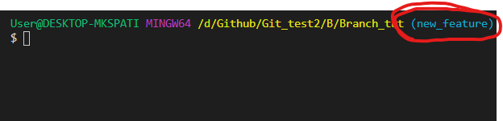
輸入git branch可以看到我們專案裡的分支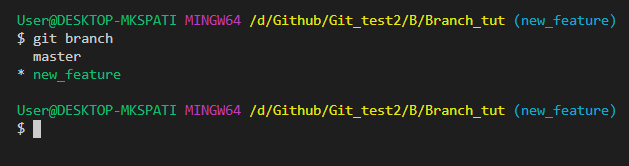
我們每次建完一次分支都必需push上去，輸入git push -u origin HEAD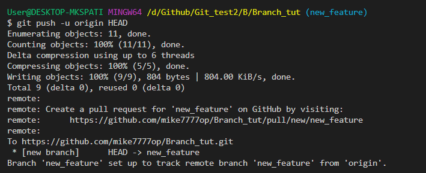
第二步:如何整合branch
Merge有兩種方法，方法一:我們在github上做pull request，方法二:我們在自己的電腦先做merge
方法一:pull request
先切到新的branch，按Compare & pull request，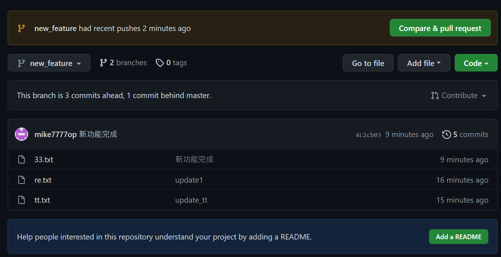
我們可以選擇要誰merge誰，而Can't automatically merge說明兩台電腦都做過更新，有衝突發生，所以不讓我們merge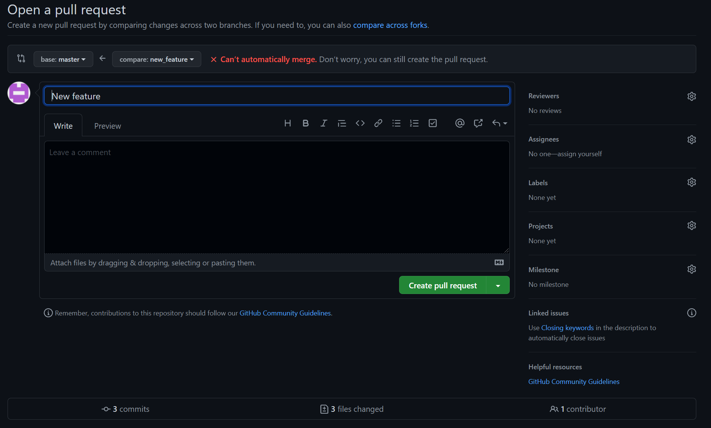
那我們做一個叫做rebase的動作，意思是我們把我們的分支接回去原來的分支，我們輸入git switch [原來的branch]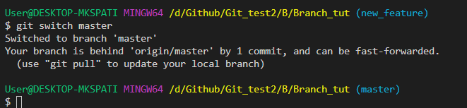
切記我們在新的branch上如果有東西沒commit，記得要先commit如果有東西沒commit，記得要先commit在切換
我們先git pull，把另一台電腦更新的版本給拉下來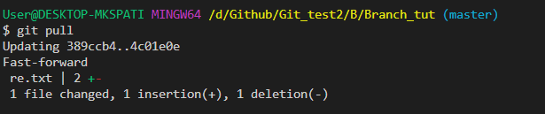
在切回到new_feature的branch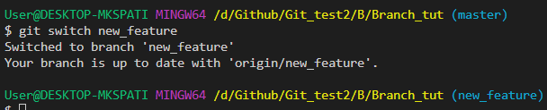
最後輸入git rebase master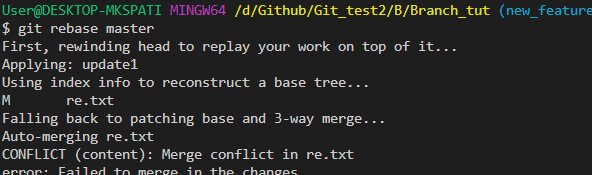
如果發生衝突(請看前一章節)
修改完後輸入git rebase --continue，就可以解好衝突了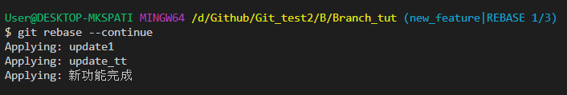
但push時發現有錯誤，原因是我們在push的話會改變你過去的歷史紀錄，所以它不讓你push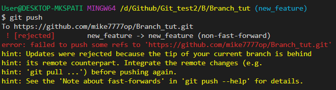
解法就是我們強制push上去，git push -f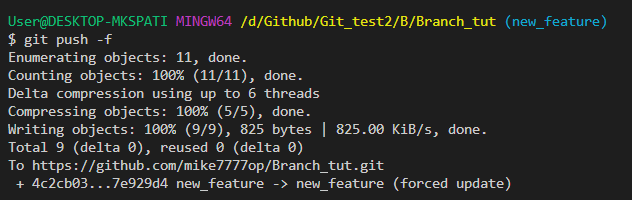
注意，這邊的push -f，不建議在主分支上做，只適合在其他分支，
回到github在merge一次點選create pull request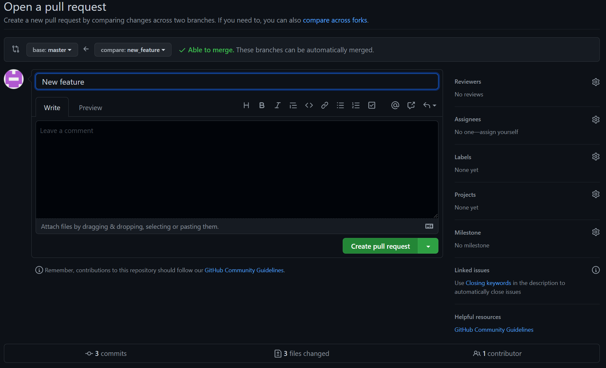
點選Merge pull request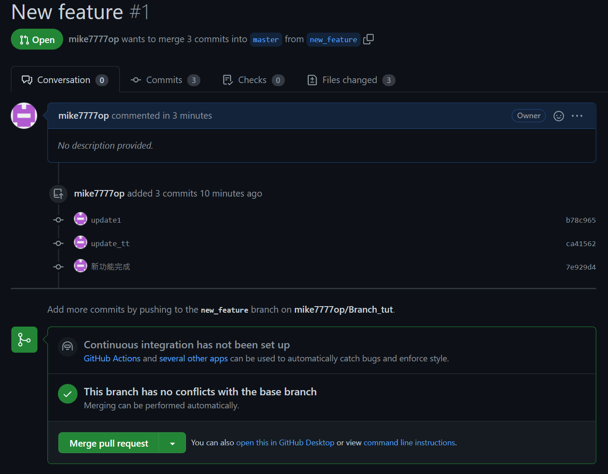Confirm merge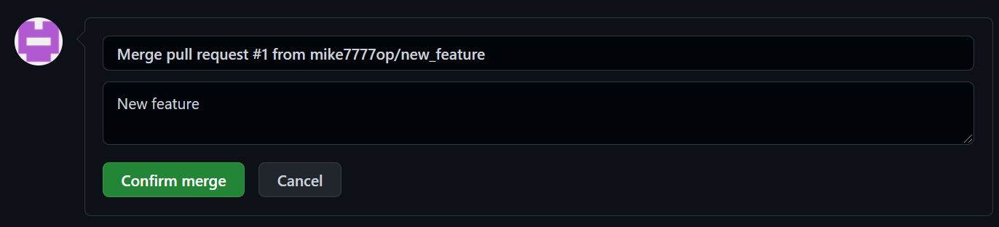
這樣我們就成功merge了
第三步:如何刪除branch
我們切回master，輸入git branch -d [分支]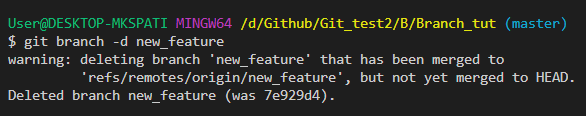